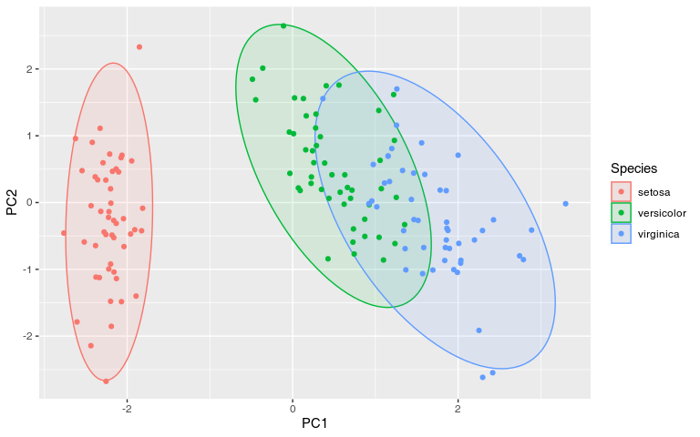
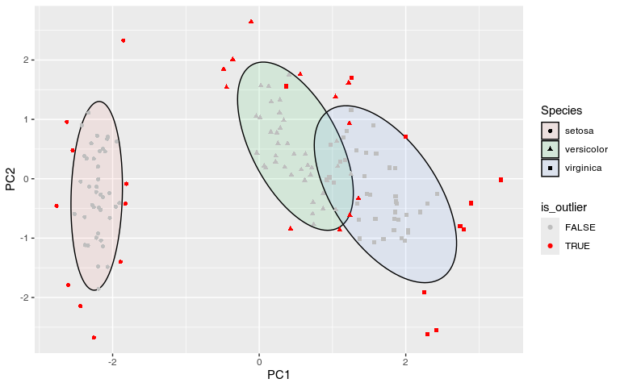
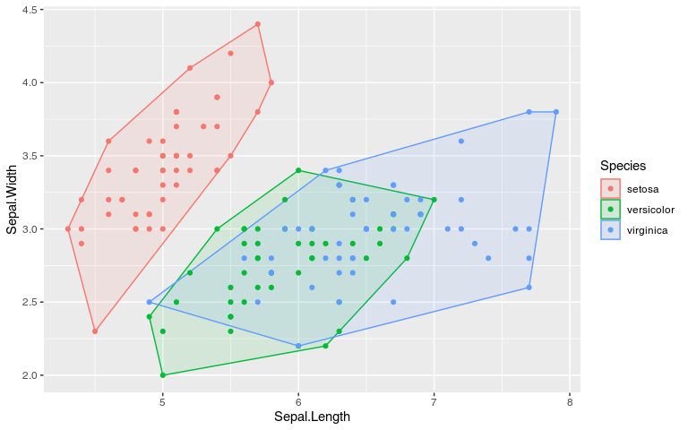

Hotelling data ellipses use the Hotelling T² distribution to create coverage regions for the distribution of the data, often used in outlier detection in multivariate data. This is different from the ellipses returned by the ellipse::ellipse() or car::dataEllipse() functions, which produce data ellipses based on a Mahalanobis distance contour, representing the shape and spread of the data distribution.
This is also slightly different from the stat_ellipse() can be used to create data ellipses (much like the ones from ellipse::ellipse()), and also certain type of t ellipses. In contrast, gghotelling provides explicit Hotelling T² data ellipses and Hotelling T² confidence ellipses, with a clear distinction between the two.
Unlike stat_ellipse(), it can also take the fill aesthetic for a visually pleasing representation of the ellipses.
A lot of functionality overlaps with ggfortify::ggbiplot() (and by extension autoplot.pca_class), but this function is less flexible than a separate geom that you can add to the figure.
Moreover, the package provides a stat_outliers() function to compute the per-point Hotelling T² statistics, which can be used to identify and visualize multivariate outliers in scatter plots.
My main motivation for creating this package was sorting out the different ellipse types and allowing the use of fill aesthetics for Hotelling ellipses.
Installation
You can install the development version of gghotelling from GitHub with:
# install.packages("pak")
pak::pak("january3/gghotelling")Hotelling Ellipses
The package defines a new geom, geom_hotelling(), which can be used to add Hotelling ellipses to ggplot2 scatter plots.
library(ggplot2)
library(gghotelling)
pca <- prcomp(iris[, 1:4], scale.=TRUE)
df <- cbind(iris, pca$x)
ggplot(df, aes(PC1, PC2)) +
geom_hotelling(level=.99) +
geom_point()
ggplot(df, aes(PC1, PC2, color=Species)) +
geom_hotelling() +
geom_point()
ggplot(df, aes(PC1, PC2, color=Species)) +
geom_hotelling(alpha=0.1, aes(fill = Species)) +
geom_point()
# set custom CI/coverage level
ggplot(df, aes(PC1, PC2, color=Species)) +
geom_hotelling(alpha=0.1, aes(fill = Species), level=.99) +
geom_point()
The package also provides per-point, group-wise T² statistics which can be used to identify multivariate outliers.
ggplot(df, aes(PC1, PC2, group=Species)) +
geom_hotelling(level = 0.75, alpha=0.1, aes(fill = Species)) +
scale_color_manual(values=c("TRUE"="red", "FALSE"="grey")) +
stat_outliers(level = .75, aes(shape = Species, color = after_stat(is_outlier)))
ggplot(df, aes(PC1, PC2, group=Species)) +
geom_hotelling(alpha=0.1, aes(fill = Species)) +
stat_outliers(size=2, aes(shape = Species, color = after_stat(t2)))
This can be useful for identifying potential outliers in multivariate data. The outliers can be directly labeled as follows:
ggplot(df, aes(PC1, PC2, group=Species, label=rownames(df))) +
geom_hotelling(alpha=0.1, aes(fill = Species)) +
geom_point(aes(color = Species)) +
stat_outliers(geom="label",
outlier_only = TRUE)
# or even with geom_label_repel from ggrepel
library(ggrepel)
ggplot(df, aes(PC1, PC2, group=Species, label=rownames(df))) +
geom_hotelling(alpha=0.1, aes(fill = Species)) +
geom_point(aes(color = Species)) +
stat_outliers(geom="label_repel",
outlier_only = TRUE)
Convex Hulls
ggplot(iris, aes(Sepal.Length, Sepal.Width, color=Species)) +
geom_hull(mapping = aes(fill = Species), alpha=.1) +
geom_point()